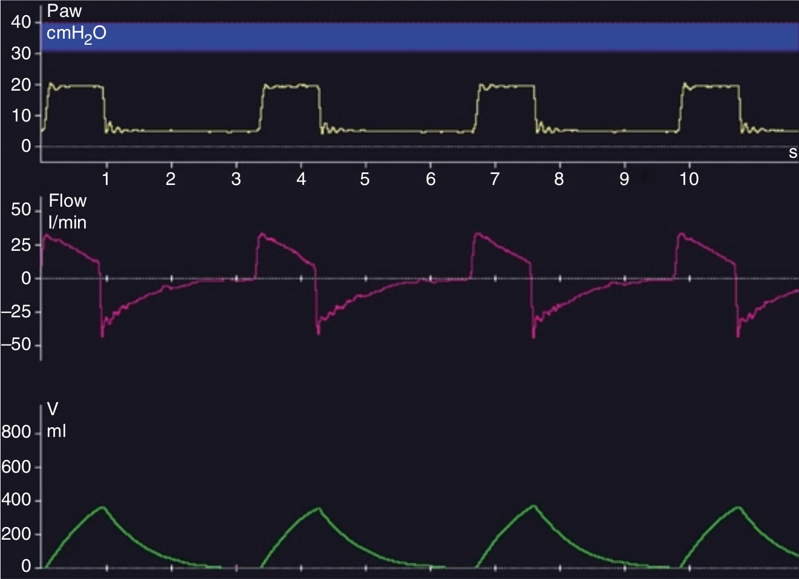

منحنی شدت جریان و فشار راه هوائی نشان دهنده تعامل بین تنظیمات ونتیلاتور و مکانیک تنفسی بیمار می باشد. در واقع منحنی فشار، شدت جریان و حجم ترسیم شده توسط ونتیلاتور چیزی نیست مگر تظاهر گرافیک معادله حرکت ریه.

آنالیز منحنی ها برای چه هدفی بکار میرود؟
۱ - ارزیابی مکانیک تنفسی بیمار
۲ - بهینه سازی تنظیمات ونتیلاتور
۳ - یک و دم
۴ - پیش بینی تبادل گازی
۵ - یادگیری جغرافی